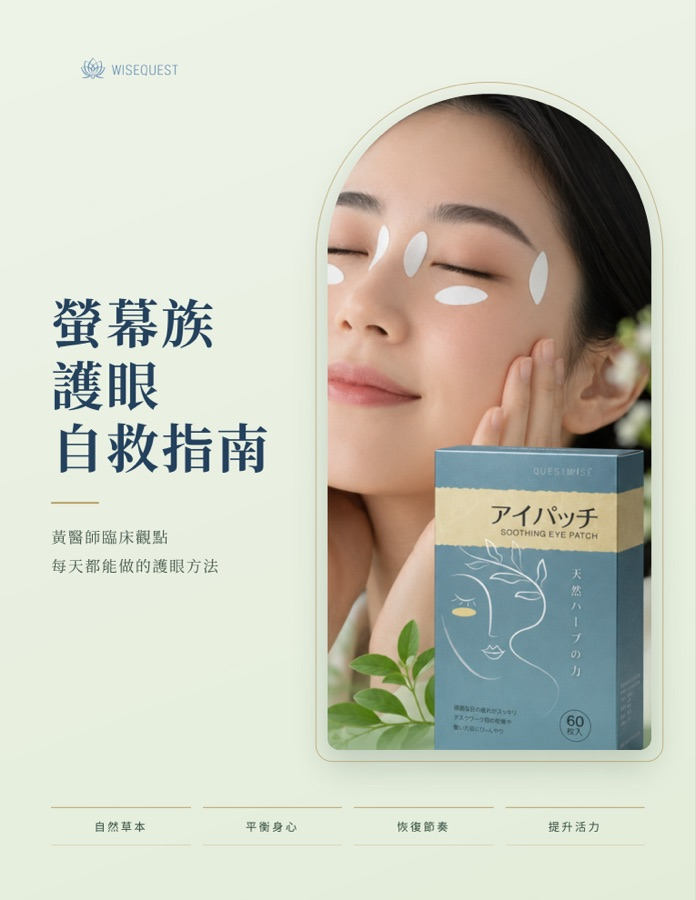
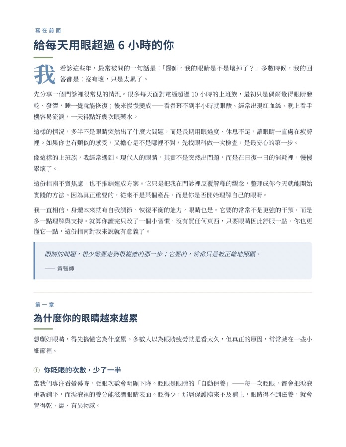
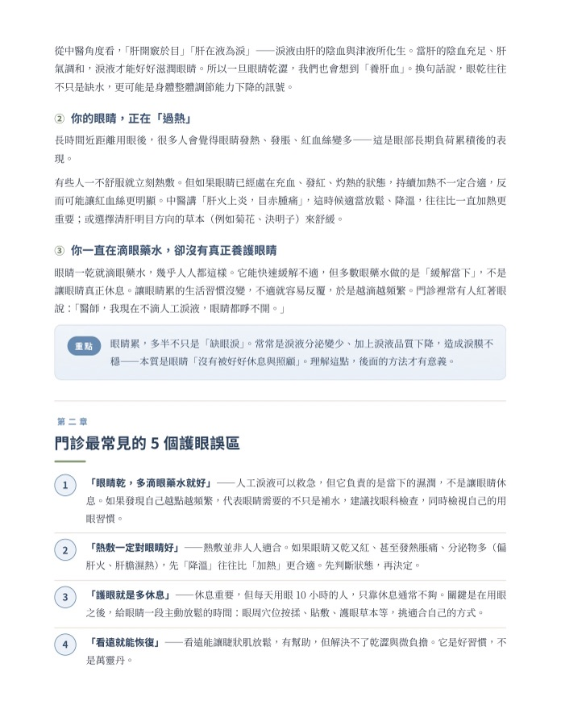
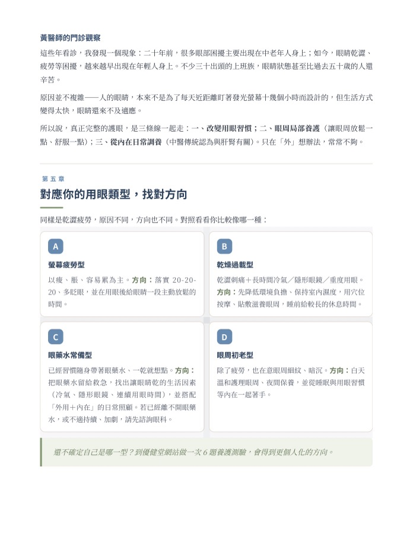

免費電子書 · 黃醫師整理
眼睛又乾又累？多半不是壞了，是太累了
黃醫師把門診裡最常被問的護眼問題，整理成一本 7 頁的電子書：眼睛為什麼越來越累、5 個常見誤區、每天做得到的 7 件小事，還有對照你的用眼類型，該從哪裡開始照顧。留下 Email 馬上下載，PDF 也會寄到你的信箱。
✓ 已收到！第一封信幾分鐘內寄到（沒看到的話，查看一下垃圾郵件匣）。也可以現在直接下載 PDF →接下來可以看看：看看護眼保健系列・也領取 7 天護眼小計畫
- 完全免費
- 不用買任何東西
- 隨時可取消訂閱

免費先看看內容
7 頁，從「為什麼累」到「怎麼開始」
黃醫師用門診裡最常解釋的方式寫成：不賣焦慮，也不推銷速成方案，只整理你今天就能開始做的事。



- 寫在前面給每天用眼超過 6 小時的你多數時候，眼睛沒有壞，只是太累了。
- 第一章為什麼你的眼睛越來越累眨眼次數少了一半、眼睛正在「過熱」、一直滴眼藥水卻沒有真正休息。
- 第二章門診最常見的 5 個護眼誤區「眼睛乾，多滴眼藥水就好」「熱敷一定對眼睛好」……哪裡不對？
- 第三章螢幕族每天能做的 7 件小事不用改變生活方式，任選幾項融入日常。
- 第四章中醫怎麼看眼睛「肝開竅於目」：為什麼護眼不只是眼睛局部的事。
- 第五章對應你的用眼類型，找對方向4 種常見類型，各自先從哪裡開始。
- 居家養護黃醫師的居家養護小貼士一杯草本明目茶飲的煮法，和眼周穴位按揉。
你比較像哪一型？
同樣是乾澀疲勞，方向不一樣
先對照看看。每一型該從哪裡開始照顧，寫在指南第五章。
- A螢幕疲勞型以痠、脹、容易累為主。
- B乾燥過載型乾澀刺痛，加上長時間冷氣、隱形眼鏡或重度用眼。
- C眼藥水常備型已經習慣隨身帶著眼藥水，一乾就想點。
- D眼周初老型除了疲勞，也在意眼周細紋、暗沉。
找到自己的類型了嗎？下載電子書，看看你這一型的照顧方向。
免費下載 →你會收到
下載就能用
- 7 頁電子書（PDF）手機、電腦都能讀，也能印出來慢慢看。
- 對照你的用眼類型4 種常見類型，各自先從哪裡開始照顧。
- 哪些情況先找眼科書裡標出了哪些狀況別自己撐，先做一次眼科檢查。
適合誰
如果你是……
- 每天看螢幕超過 6 小時
- 眼睛一乾就想點眼藥水
- 長時間待在冷氣房或戴隱形眼鏡
- 想從日常開始照顧眼睛，不想等到不舒服才處理

關於優健堂
只講日常做得到的事
優健堂 UHealthFit 是 WiseQuest 草本養護系列的美國中文站。WiseQuest 的配方由黃醫師研發：中國中西醫結合執業醫師、中醫全科醫師，有二十年臨床經驗。
這份《螢幕族護眼自救指南》依照我們的內容原則整理：只講日常做得到的小事，不誇大、不製造焦慮，也不取代醫療。
認識黃醫師 →
常見問題
領取前想先知道的事
真的免費嗎？需要買東西嗎？
完全免費，不需要購買任何產品。書裡的方法大多是日常就能做到的小事。
書裡會推銷產品嗎？
整本以護眼觀念和日常方法為主。最後一頁簡短介紹了 WiseQuest 的眼貼與明目膠囊，給想讓護眼更省事的人參考；不買也完全不影響使用。
這能取代看眼科嗎？
不能。這份指南是一般護眼知識與生活方式分享，不是醫療診斷或治療建議。如果眼睛的不適持續、加重，或已經離不開眼藥水，請先找眼科醫師檢查。
和《7 天護眼小計畫》有什麼不同？
電子書講「為什麼會累」和「該往哪個方向照顧」；7 天護眼小計畫是一張打勾表，帶你一天養成一個小習慣。兩份可以一起用。
PDF 怎麼下載？之後會收到 Email 嗎？
送出 Email 後，頁面會立即出現下載連結，PDF 也會寄到你的信箱。之後偶爾會收到優健堂的健康養護內容與會員消息，每封信底部都可以一鍵取消訂閱。
今天就多懂自己的眼睛一點
留下 Email，馬上下載 7 頁電子書，PDF 也會寄到你的信箱。
✓ 已收到！第一封信幾分鐘內寄到（沒看到的話，查看一下垃圾郵件匣）。也可以現在直接下載 PDF →接下來可以看看：看看護眼保健系列・也領取 7 天護眼小計畫
延伸閱讀
想多了解一點
優健堂的選購指南：市面上有哪些選項、各自負責什麼、怎麼開始。